Ciencia validada
Placeholder
Cómo evaluamos →Aceleramos compañías con ciencia robusta en su camino del laboratorio a la validación de mercado.
En Latinoamérica hay ciencia de nivel mundial que no llega al mercado. Lo que falta es capital paciente, estructura empresarial, conexión con la industria y una red de especialistas para cada desafío legal, regulatorio y comercial. Numancia construye ese camino.
Desarrollar la plataforma tecnológica a partir de investigación de frontera, hasta convertirla en una plataforma tecnológica con aplicación en el mercado.
Convertir la plataforma en una compañía sólida, lista para la próxima ronda, licencia o alianza.
Así el riesgo baja de forma visible para todos.
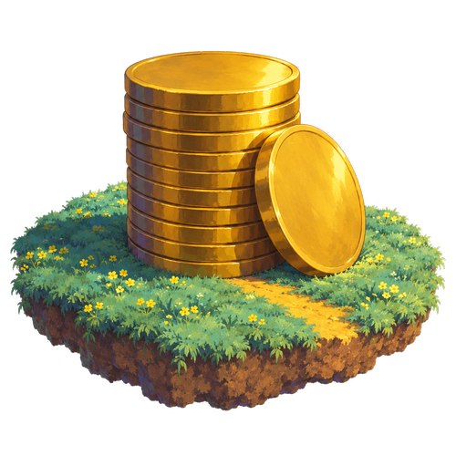
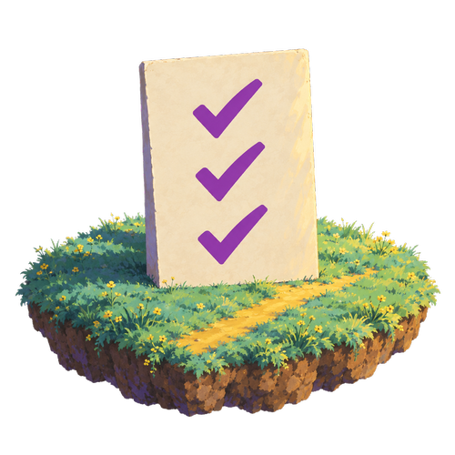
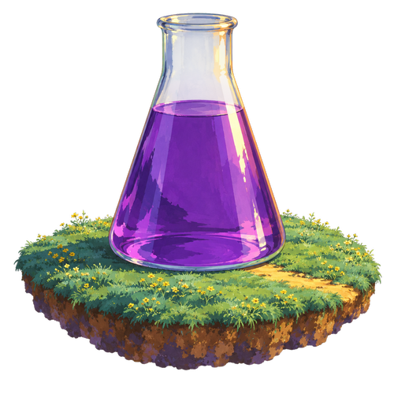
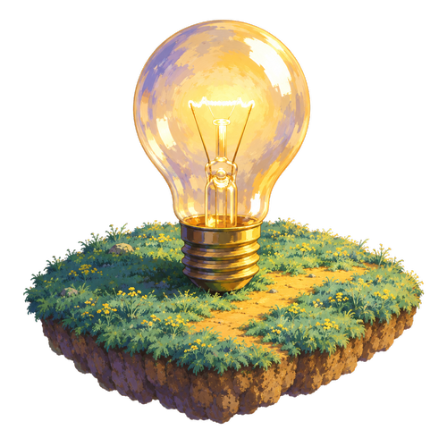
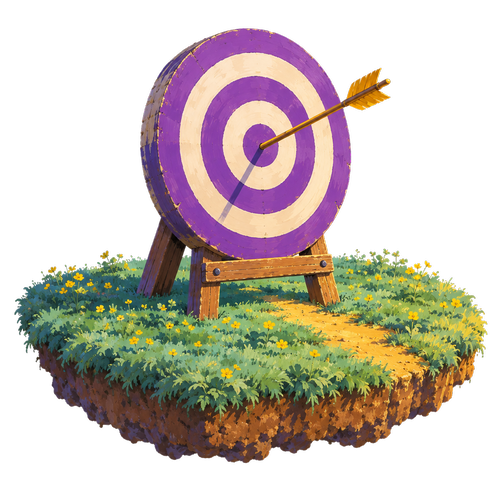
00· Capital inicial01· Hito02· Hito03· Hito04· ObjetivoPlaceholder: buscamos equipos que atacan problemas donde el conocimiento científico es la ventaja, en mercados donde una mejora concreta cambia el negocio.
Placeholder
Cómo evaluamos →Placeholder
Dónde estamos → Planta piloto
Planta piloto
Placeholder
Áreas de interés →“ Un buen científico frente a un problema real, antes que un buen pitch ”
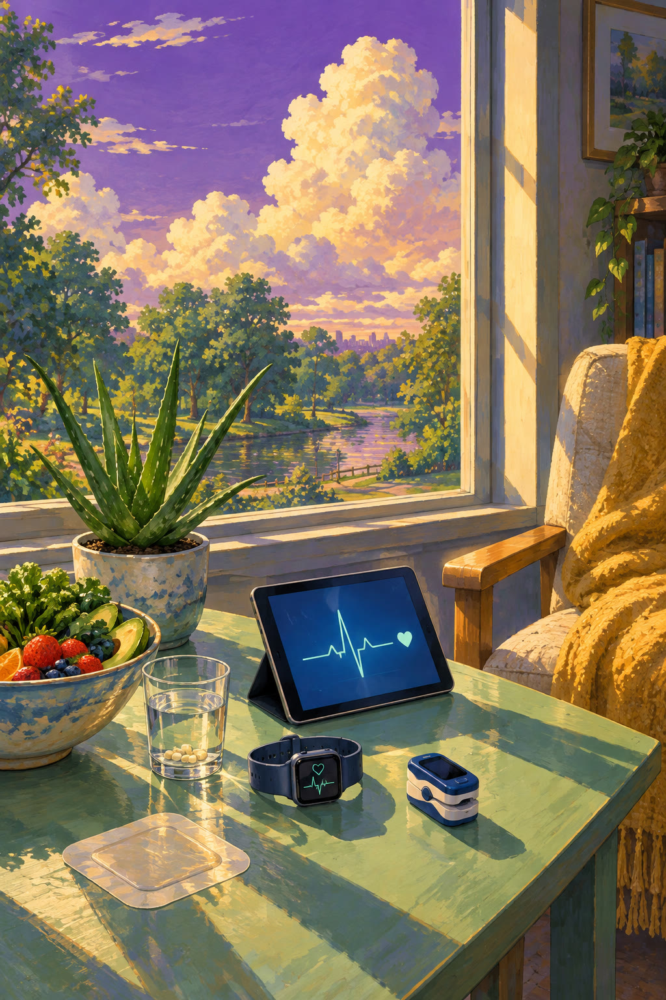
Tecnologías que
mejoran la salud y el bienestar
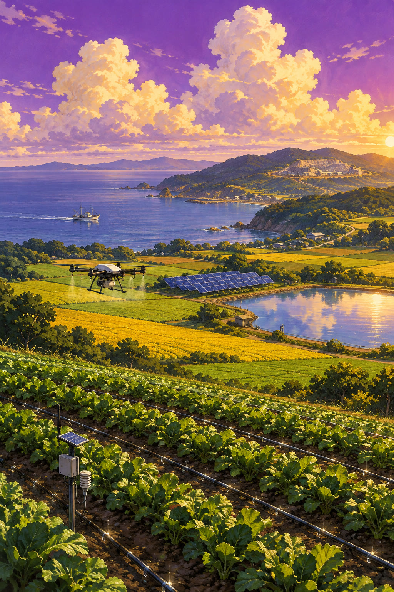
Tecnologías que
aprovechan mejor los recursos naturales
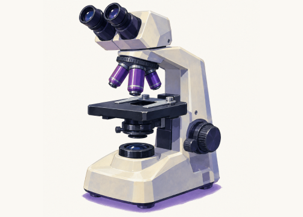
Expertos que validan y guían la ciencia.
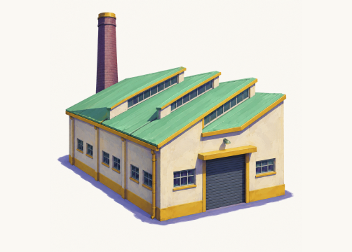
Acceso a socios, clientes y potenciales licenciatarios.
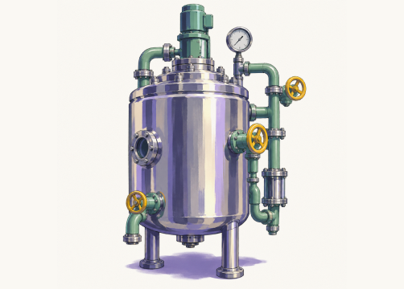
Pasar del laboratorio a producción.
BPM, ISO, trazabilidad y aprobaciones.
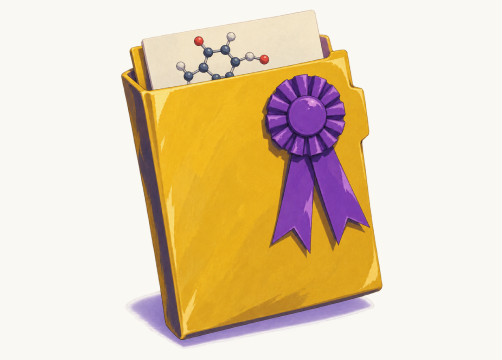
Estrategia de patentes y libertad de operación.
Gobierno, acuerdos y due diligence.
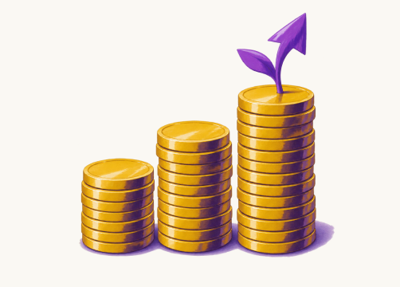
Conexión con inversores y financiamiento no dilutivo.
Equipo técnico y de gestión.
Latinoamérica produce ciencia de primer nivel que pocas veces llega al mercado. Estamos donde esa ciencia ocurre, de Ciudad de México a Buenos Aires.
Una charla para entender el problema. No hace falta un plan de negocios.
Científicos revisan los datos; en paralelo, el mercado. Devolvemos lo que vimos.
Hitos para los dos objetivos y el instrumento adecuado.
Capital contra hitos, con asesores, red y fondos no dilutivos.
Carolina Méndez · Andrés Villalba · Julieta Ortiz
Dra. Paula Sosa · Dr. Ignacio Ruiz · Dra. Camila Benítez
Buscamos alianzas con institutos científicos de primer nivel.
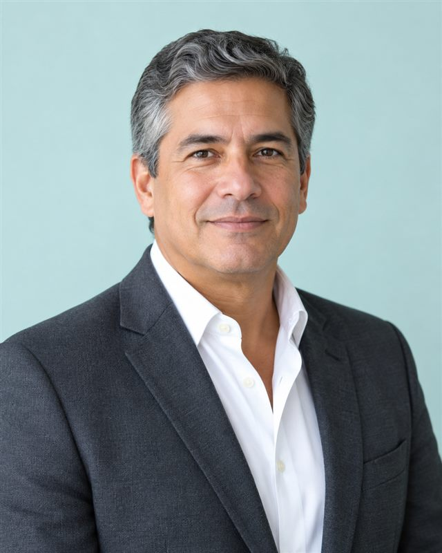
Director de inversiones
Estrategia del fondo · Selección de proyectos · Relación con inversores
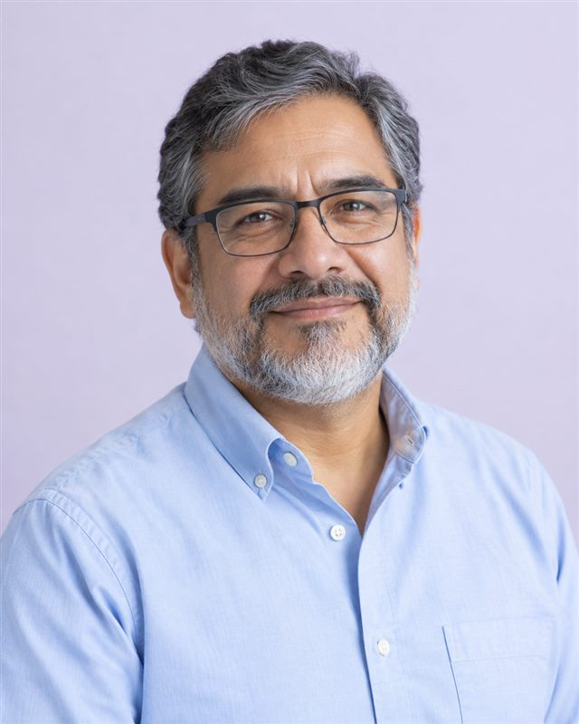
Due diligence científica
Evaluación técnica · Escalabilidad · Propiedad intelectual
Finanzas y riesgo
Estructuración · Hitos · Control de riesgo
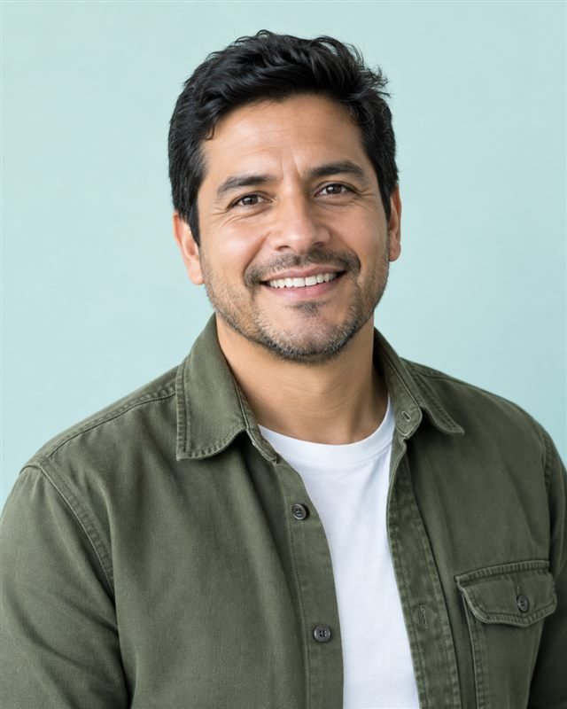
Desarrollo de negocios
Socios industriales · Clientes · Alianzas
Contanos qué problema resuelve tu tecnología y en qué punto está.
→ B· Para inversoresConocé la tesis, la estructura del fondo y cómo participar.
→